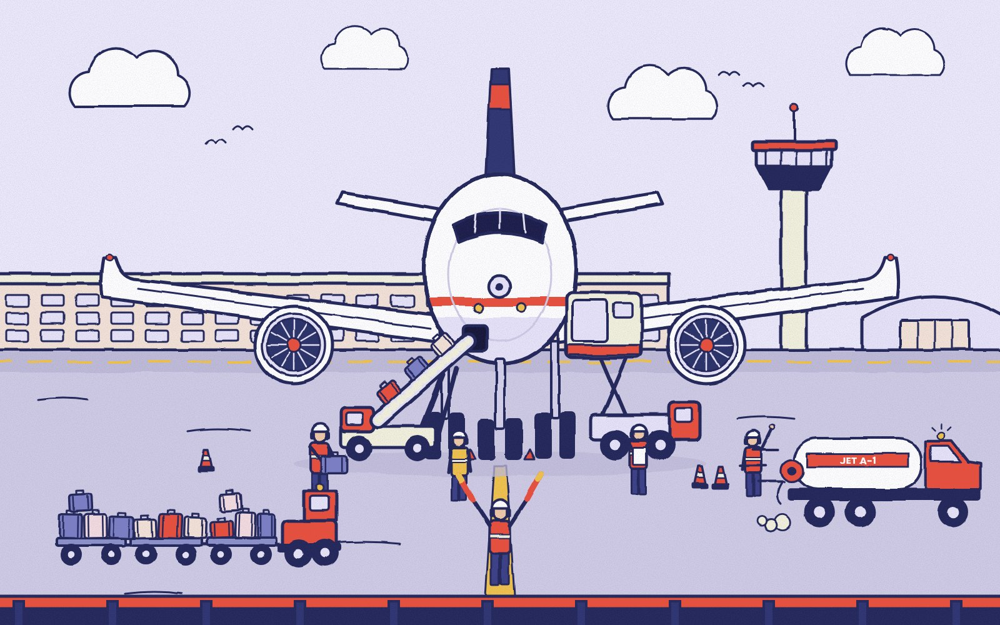
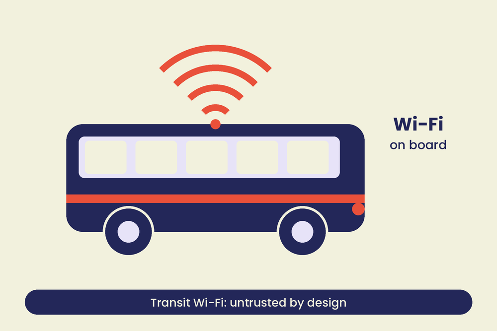
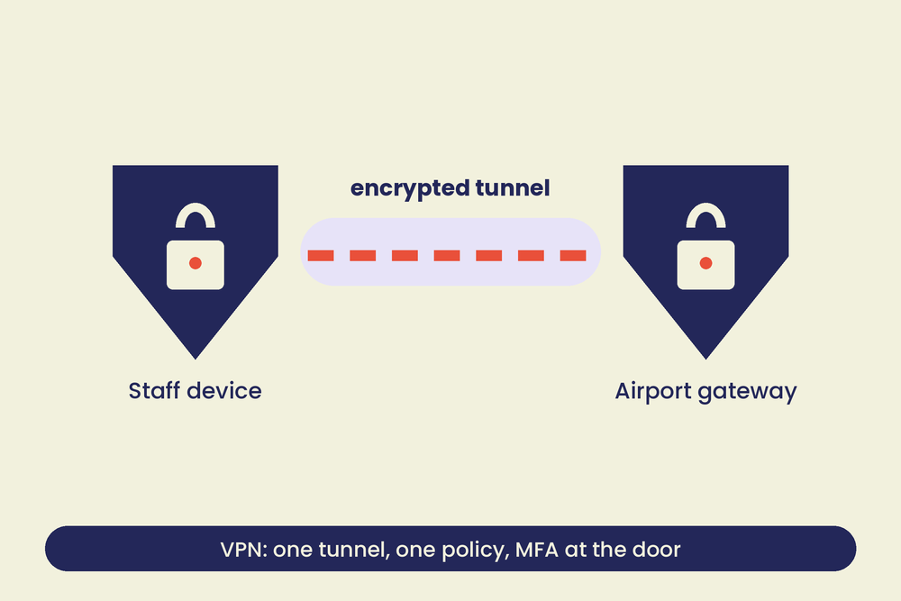
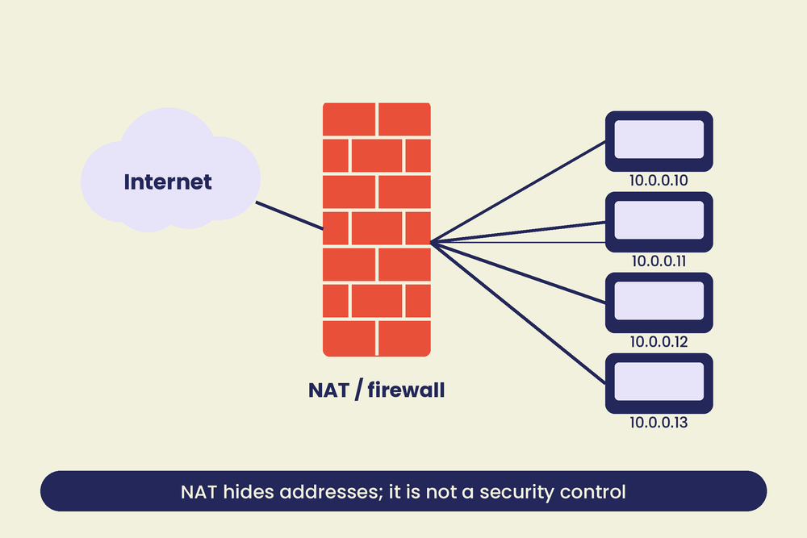
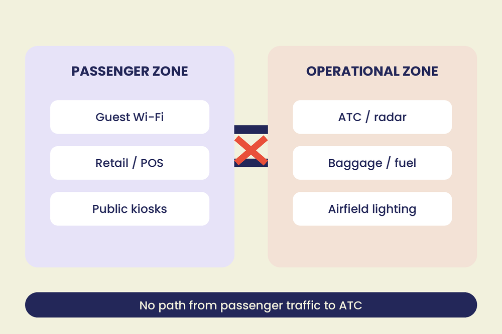
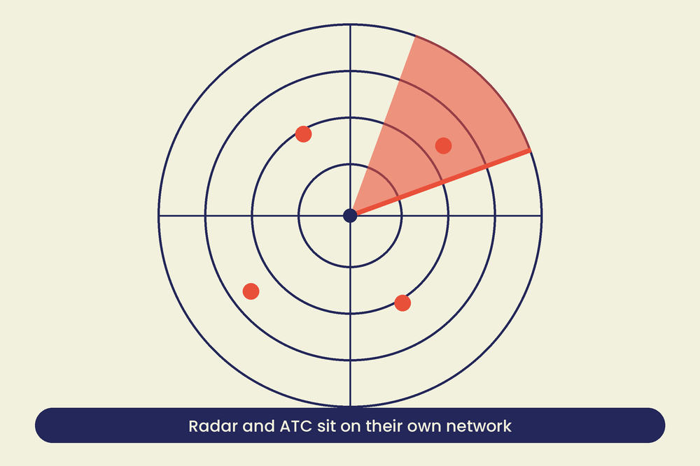

01Executive summary
About this report
This is an illustrative, reference-style briefing on how the networks around a large European airport hang together, where they tend to break, and what good hygiene looks like. Athens International Airport is used as the worked example because it is a typical modern hub: public Wi-Fi, bus and rail links, thousands of airport workers, and operational systems that must never be reachable from any of it.
Scope note
This is not an audit of Athens International Airport and uses no confidential information. Everything here is built from public reporting, published standards and general network practice. Documented incidents are real and are labelled as such; they are drawn from other airports and sectors, and the threat landscape section says which. Nothing in this report claims ATH has suffered any of them.
Why landside networks deserve attention
Landside is where the public is: terminal Wi-Fi, charging points, retail tills, bus and rail connections, car parks. It is also where attackers have the easiest access. They do not need to defeat airport security to sit in a cafe and set up a fake hotspot. The question is never whether landside will be probed. It is whether anything important can be reached from there.
02Landside & passenger network overview
An airport is several networks wearing one logo. A useful way to read it is by trust level, from the least trusted (anyone with a phone) to the most (systems that move aircraft).
- Public zone: passenger Wi-Fi, kiosks, charging points, transit-stop hotspots. Assume hostile.
- Commercial zone: retail tills, car-park payment, advertising screens. Handles card data, so it carries compliance duties of its own.
- Corporate zone: airport company staff, email, finance, HR, remote access.
- Operational zone: baggage, fuel, airfield lighting, building systems, ATC and radar. Safety-critical and built to be isolated.

A note on ATC
Air traffic control is run by the national air navigation service provider, not by the airport company. That split is a security advantage when it is honoured in the network design, and a risk when shared infrastructure quietly erodes it.
03Public & transit Wi-Fi
Passengers meet airport Wi-Fi before they reach the terminal: on the bus from the city, at the stop, on the platform. Each is a separate network owned by a separate operator, and users cannot tell them apart. That is the opening an attacker uses.

Documented: the evil twin
In 2024 Australian Federal Police charged a man over "evil twin" Wi-Fi networks that mimicked legitimate hotspots at Perth, Melbourne and Adelaide airports and on domestic flights. Travellers who joined were sent to a fake login page that harvested email and social-media credentials. No hacking of the airport was needed, only a laptop and a convincing network name.
Baseline controls
- Client isolation on every public SSID, so passengers cannot see each other.
- WPA3 or Enhanced Open where devices support it; a captive portal alone is not encryption.
- Wireless intrusion detection that alerts on lookalike SSIDs and rogue access points in the terminal.
- Passenger Wi-Fi terminates in its own zone, routed straight to the internet and nowhere else.
- Clear signage of the one correct network name, and advice to treat every public network as untrusted.
04VPN & remote access
A VPN is a tunnel, not a trust upgrade. For passengers it protects traffic on a hostile network. For airport workers and contractors it is the front door to the corporate network, and the front door is where attackers knock.

- MFA everywhere, ideally phishing-resistant keys for administrators and anyone with operational access.
- No split tunnelling for staff devices: all traffic goes through the gateway so it can be inspected and logged.
- Patch the gateway first. Internet-facing VPN appliances are a favourite initial-access route, so they sit at the top of the patch queue.
- Least privilege by role. A VPN login should land in one small zone, not on the whole network.
- Contractor access that expires. Time-boxed accounts, reviewed monthly, removed on contract end.
05NAT & perimeter hygiene
Network address translation lets thousands of devices share a few public addresses. It is useful plumbing and a common source of false comfort: hiding addresses is not the same as blocking traffic. The real protection is the firewall rules that sit alongside it.

Documented: GhostDNS
In 2018 researchers described GhostDNS, a campaign that changed the DNS settings on more than 100,000 home and small-office routers, mostly in Brazil, by exploiting weak admin passwords and known flaws. Victims typing their bank's real address were quietly sent to a copy. The lesson for an airport: edge devices, including those at remote offices and bus-stop kiosks, are part of the perimeter, and default credentials are a vulnerability.
- Inventory every edge device, router and gateway, including those run by contractors and transit partners.
- Change defaults, disable remote admin from the internet, and lock DNS to resolvers you control.
- Review NAT and port-forward rules quarterly; delete every rule nobody can justify.
- Log translations, so an incident can be traced from a public address back to the internal device.
06Network segmentation
Segmentation is the main control in this report. Everything else reduces the chance of a compromise. Segmentation decides how far a compromise can go.

- Passenger, corporate and operational networks are separate security zones with default-deny between them.
- Where data must cross, it crosses a single, monitored, one-way or tightly proxied point, not a shared switch.
- Operational systems do not use the corporate directory or the corporate remote-access service.
- Radar and ATC infrastructure stay physically and logically separate from anything the airport company runs for passengers.
- Test the separation. Run scans from the passenger side and confirm that nothing operational answers.
Documented: Boryspil, 2016
Ukrainian authorities reported malware inside the network of Kyiv's Boryspil airport in January 2016, in a segment that included air traffic control systems. It was an early, public example of why the line between general airport IT and ATC has to be hard rather than assumed.
07Regulatory & governance
Several regimes touch the same networks, and none of them replaces the others. Together they set the baseline.
EASA
Aviation information-security rules for organisations in the European aviation system, including risk management and incident reporting.
NIS2
EU directive covering essential entities, which includes air transport. Sets security measures, management accountability and reporting deadlines.
ICAO
International guidance on aviation cyber security, built into national programmes and the Chicago Convention annexes.
Data protection
GDPR governs passenger and worker data: lawful basis, minimisation, breach notification within 72 hours.
Who owns what
| Role | Owns |
|---|---|
| Board / accountable manager | Risk appetite, budget, personal accountability under NIS2 |
| CISO / security lead | Policy, architecture standards, incident coordination |
| Network and IT operations | Segmentation, patching, logging, remote access |
| Operational technology owners | Safety-critical systems, change control, vendor access |
| Data protection officer | Passenger and staff data, breach assessment |
| Air navigation service provider | ATC networks and their own security obligations |
Overlap, not redundancy
Where regimes overlap, treat it as a cross-check rather than duplicated work. One well-evidenced control, such as the tested separation of ATC from passenger traffic, can answer several audits at once.
08Platform & data sovereignty
Reducing platform monoculture
When every device runs the same operating system and every service lives with the same cloud provider, one flaw, one outage or one legal demand reaches everything at once. For an airport, diversity is a resilience measure, not a fashion choice.
- Plan an exit from a single desktop OS monoculture: Linux and managed thin clients for kiosks, check-in and back-office roles where they fit.
- Prefer EU-hosted, EU-governed infrastructure for sensitive workloads, with contractual and technical control over keys.
- Keep an offline fallback for critical operations. A system that cannot run without a foreign cloud is a dependency, not an asset.
- Treat vendor consolidation as a risk to be argued for, not a saving to be assumed.
Where passenger data actually sits
Names, passport numbers, itineraries and contact details pass through airlines, handlers, booking platforms, retail partners and analytics vendors. Each copy is another place to be breached, subpoenaed or sold. The airport rarely needs most of it.
Need to know, not a data bank
Passenger names and details should flow to the people and systems that need them for a flight, for as long as that flight needs them, and then go. A large standing store of passenger data is a prize for anyone who wants to pillage it: criminals, insiders and states. Design so the store does not exist.
Five baseline moves
- Collect less. If an airport process does not need the passenger name, do not hold it.
- Keep it short. Fixed, short retention with automatic deletion, and proof that it happens.
- Keep it local. Sensitive data on infrastructure under European jurisdiction, with keys held by the airport.
- Split it. Separate identity data from operational data, so one breach does not join them up.
- Log access. Every lookup of a passenger record is attributable to a named person and a reason.
09Threat landscape
It is tempting to picture airport hacking as a criminal gang after a ransom. That happens, but the threats that matter most to aviation are state-linked: actors with patience, budgets and strategic reasons to disrupt or to watch.

Documented: state-linked activity
August 2024: GPS spoofing
The Wall Street Journal reported that a United Airlines flight over the Middle East experienced GPS spoofing, with the aircraft receiving false position data. Spoofing and jamming of satellite navigation is now widespread around conflict zones; EASA has reported thousands of such events across Europe in 2024, on the order of 6,000. Aircraft carry backup navigation, but crews are being asked to rely on it more often.
June 2017: NotPetya
NotPetya began as a poisoned update to Ukrainian accounting software and spread worldwide, wiping systems at shipping, pharmaceutical and logistics firms. The US and UK governments attributed it to Russian military intelligence. Boryspil airport in Kyiv was among those hit, with staff reverting to whiteboards. It was not aimed at airports, which is the point: state-grade malware does not respect sector boundaries.
For contrast: criminal, not state
September 2018: Bristol Airport
Bristol Airport's flight information screens were taken offline by a ransomware attack over a weekend. Staff fell back to whiteboards and paper while systems were rebuilt. Flights continued, but the disruption showed how a business-system attack reaches passengers.
Everything above is public reporting about other organisations. None of it is a claim about Athens International Airport.
11Incident response & business continuity
Detection and recovery decide how bad an incident becomes. Both need to be practised before they are needed, including the manual fallbacks seen in the real incidents in the threat landscape.
| Phase | What it means here |
|---|---|
| Detect | Central logging, alerts on zone-boundary traffic, rogue Wi-Fi detection, a clear reporting route for staff. |
| Contain | Pre-agreed authority to cut a zone off. Passenger Wi-Fi can be sacrificed; operational systems must be protected first. |
| Eradicate | Remove the foothold, reset credentials and keys, patch the entry route. Do not rebuild onto a still-compromised network. |
| Recover | Restore from offline backups, in priority order: safety, operations, passenger services, commercial. |
| Review | Blameless review, evidence for regulators, and changes to controls and exercises. |
Plan for the manual day
Whiteboards at Bristol and Boryspil kept flights moving. Keep printed procedures, offline contact lists and rehearsed manual operations for the systems passengers see.
12Recommendations summary
Network & access
- Default-deny between passenger, corporate and operational zones.
- Client isolation and rogue-AP detection on public Wi-Fi.
- Audit NAT, firewall and edge devices quarterly.
Identity & people
- Phishing-resistant MFA for admin and operational access.
- Time-boxed contractor accounts.
- Short, frequent social-engineering training.
Governance
- One owner for each zone and each regime.
- Evidence of tested ATC separation, reusable across audits.
- Data minimisation and retention as a board-level policy.
Resilience
- Offline backups and tested restores.
- Manual fallbacks for passenger-facing systems.
- Platform diversity and a plan to exit single-vendor dependence.
13Risk overview matrix
| Risk | Likelihood | Impact | Key control |
|---|---|---|---|
| Evil-twin / rogue Wi-Fi | Medium–High | Low–Medium | Client isolation, WIDS |
| VPN / remote-access compromise | Medium | Medium–High | MFA, patching, no split-tunnel |
| Edge router / DNS hijack | Medium | Medium | Config audits, locked DNS |
| Passenger-to-ATC lateral movement | Low | Severe | Segmentation, air-gap |
| State-linked intrusion or disruptive malware | Medium | Severe | Segmentation, offline recovery, monitoring |
| Passenger data breach or over-collection | Medium–High | High | Minimisation, short retention, local keys |
| Social engineering / physical access | Medium–High | Medium | Training, access control |
Ratings are qualitative and illustrative, not the result of an assessment.
14Glossary
- NAT
- Network address translation. Lets many private devices share public addresses. Not a firewall.
- VPN
- Virtual private network. An encrypted tunnel between a device and a network.
- Split tunnelling
- Sending some traffic through the VPN and the rest straight to the internet, which bypasses inspection.
- Client isolation
- A Wi-Fi setting that stops connected devices from talking to each other.
- Segmentation
- Dividing a network into zones with controlled, minimal paths between them.
- OT
- Operational technology: systems that control physical processes, like baggage, lighting and radar.
- MFA
- Multi-factor authentication. A second proof of identity beyond a password.
- Pretexting
- Inventing a believable scenario to get someone to hand over access or information.
15Document control
| Item | Detail |
|---|---|
| Title | Airport Cyber Security Report: Illustrative Edition |
| Classification | Illustrative / Training Reference. Not an Operational Audit |
| Version | ATH Ground Systems, 10 September 2026 |
| Prepared for | Internal briefing / portfolio use |
| Format | Web edition of the 17-page PDF. Download the PDF |
This document is for illustration and training. It is not an audit of, and makes no claim about, Athens International Airport or any other organisation. Documented incidents are drawn from public reporting and relate to the organisations named.
ILLUSTRATIVE COPY
10Physical & social engineering risk
A badge, a hi-vis jacket and a confident walk get people into places. Airports have thousands of workers, many contractors and constant turnover, which is the ideal environment for pretexting.